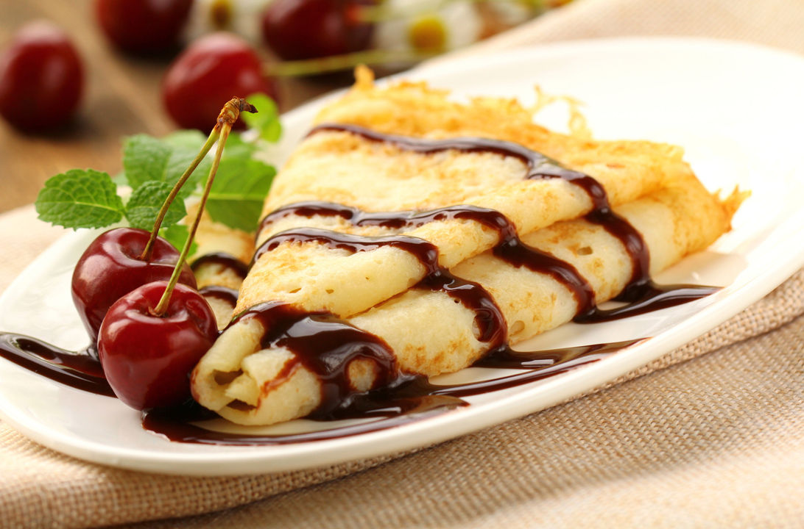
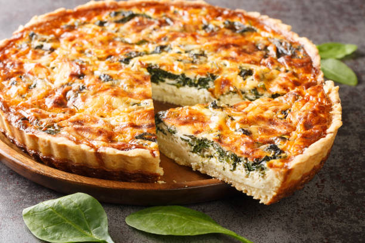
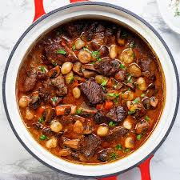

France |
| Dish |
Description |
Ingredients |
Photo |
| Croissant |
A croissant is a flaky, buttery pastry made with layered dough. It is famous because it is crispy on the outside and soft on the inside. It is important in France because it is a classic breakfast food and a symbol of French bakeries and culture |
- All-purpose flour
- Milk
- Sugar
- Salt
- Yeast
- Butter (very important, lots of butter)
- Egg (for brushing on top)
|
 |
| Ratatouille |
Ratatouille is a traditional French dish made with cooked vegetables like tomatoes, zucchini, eggplant, and peppers. It is famous for being healthy and full of flavor. It is important in France because it comes from the Provence region and represents simple, homemade French cooking. |
- Eggplant (aubergine)
- Zucchini
- Tomato
- Onion
- Garlic
- Bell pepper
- Olive oil
- Salt
- Pepper
- Herbs (like thyme or basil)
|
 |
| Crêpes |
Crêpes are thin pancakes made from flour, eggs, and milk. They are famous because they can be eaten sweet or savory. They are important in France because they are a popular street food and are traditionally eaten on La Chandeleur (Candlemas). |
- All-purpose flour
- Milk
- Eggs
- Butter (melted)
- Sugar (optional, for sweet crêpes)
- Salt
|
 |
| Quiche Lorraine |
Quiche Lorraine is a savory pie made with eggs, cream, and bacon in a pastry crust. It is famous for its rich and creamy taste. It is important in France because it comes from the Lorraine region and is a classic dish in French cuisine. |
|
 |
| Boeuf Bourguignon |
Boeuf Bourguignon is a traditional French stew made with beef cooked slowly in red wine, along with vegetables. It is famous for its deep, rich flavor. It is important in France because it comes from the Burgundy region and represents classic French slow-cooking traditions. |
- Beef
- Baco
- Onion
- Carrots
- Mushrooms
- Garlic
- Red wine
- Beef broth
- Butter or oil
- Salt
- Pepper
- Herbs (like thyme or bay leaf)
|
 |